Generated by ChatGPT on 2025-12-01
本課程聚焦於量子糾錯中最核心、也最容易被低估的部分：解碼（decoding） 與其背後的 統計推論 問題，並示範如何在 Entropica Labs 的 el-loom 框架中實作、組合與評估各式解碼器。內容假設讀者已熟悉基本的穩定子碼理論與量子通道，但會從統計推論與演算法角度重新整理解碼問題，並穿插對應的 el-loom 使用方式。
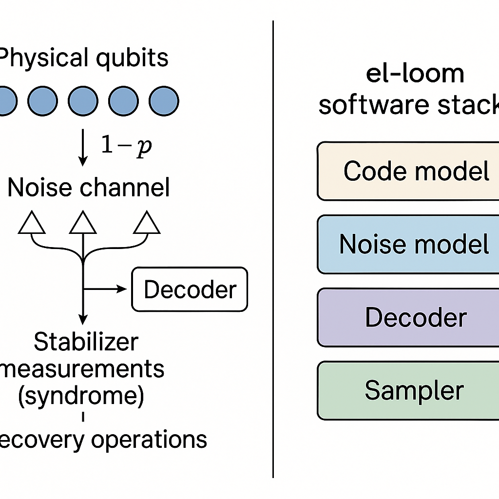
考慮一個穩定子碼，其穩定子群記為 \( \mathcal{S} \subset \mathcal{P}_n \)（\(n\) 量子比特 Pauli 群），編碼空間為 \[ \mathcal{C} = \{ \lvert \psi \rangle \,:\, S \lvert \psi \rangle = \lvert \psi \rangle,\ \forall S \in \mathcal{S} \}. \] 雜訊通道 \( \mathcal{N} \) 作用在物理態上，我們測量穩定子產生型 \( \{ S_1, \dots, S_m \} \)，得到 syndrome 向量 \[ \mathbf{s} = (s_1, \dots, s_m) \in \{\pm 1\}^m. \] 解碼器的任務是根據 \( \mathbf{s} \) 推斷一個恢復算符 \( R(\mathbf{s}) \)，並希望恢復後的邏輯錯誤最小。
典型假設是雜訊由 Pauli 錯誤組成（或可 Pauli-twirl），令 \( E \in \mathcal{P}_n \) 表示某個 Pauli 錯誤。則 syndrome 決定於錯誤： \[ s_i = \pm 1,\quad \text{such that } S_i E = s_i E S_i. \] 因此 syndrome 是錯誤的線性訊息，解碼本質上是：
形式上，Bayes 法則： \[ \Pr(E \mid \mathbf{s}) = \frac{\Pr(\mathbf{s} \mid E)\Pr(E)}{\Pr(\mathbf{s})}. \] 在理想 syndrome 量測下，若 \(E\) 對應的 syndrome 為 \(\mathbf{s}(E)\)，則 \[ \Pr(\mathbf{s} \mid E) = \begin{cases} 1, & \mathbf{s} = \mathbf{s}(E),\\ 0, & \text{otherwise.} \end{cases} \] 因此後驗分佈支撐在所有與 \(\mathbf{s}\) 相容的錯誤集合上： \[ \mathcal{E}(\mathbf{s}) = \{E \in \mathcal{P}_n : \mathbf{s}(E) = \mathbf{s}\}. \]
完全最優解碼（Maximum Likelihood / Maximum A Posteriori, ML/MAP） 是尋找 \[ E^\star(\mathbf{s}) = \arg\max_{E \in \mathcal{E}(\mathbf{s})} \Pr(E). \] 但實務中，我們對邏輯錯誤較敏感。令 \( \bar{L} \) 為邏輯 Pauli，兩個錯誤 \(E, E'\) 若只相差穩定子，即 \(E' = E S\) 對某 \(S \in \mathcal{S}\)，則在編碼空間等價： \[ E' \sim E. \] 解碼真正相關的是「錯誤等價類」，或「引致哪個邏輯算符」。
定義邏輯錯誤類別 \( [E] \) 為 \[ [E] = E \cdot \mathcal{S} = \{ E S : S \in \mathcal{S} \}. \] 給定 syndrome \(\mathbf{s}\)，在所有導致相同 syndrome 的錯誤中，可被分成若干邏輯等價類 \( [E_\alpha] \)，每類對應一個邏輯 Pauli: \[ \mathcal{E}(\mathbf{s}) = \bigsqcup_{\alpha} [E_\alpha] \cap \mathcal{E}(\mathbf{s}). \] 則後驗機率在邏輯層面的量化是： \[ \Pr([E_\alpha] \mid \mathbf{s}) = \sum_{E \in [E_\alpha] \cap \mathcal{E}(\mathbf{s})} \Pr(E \mid \mathbf{s}). \] 最優邏輯 MAP 解碼為選擇最大後驗邏輯類別 \[ \alpha^\star(\mathbf{s}) = \arg\max_\alpha \Pr([E_\alpha] \mid \mathbf{s}), \] 並選取任一代表元作為恢復： \[ R(\mathbf{s}) \in [E_{\alpha^\star(\mathbf{s})}]. \] 此為 最小化邏輯錯誤率 的最優解碼準則。
直覺上，我們想回答：「在已知 syndrome 的情況下，哪一類邏輯錯誤最可能發生？」 將解碼視為對這個機率分佈的推論問題，是接入機器學習與統計方法的自然入口。
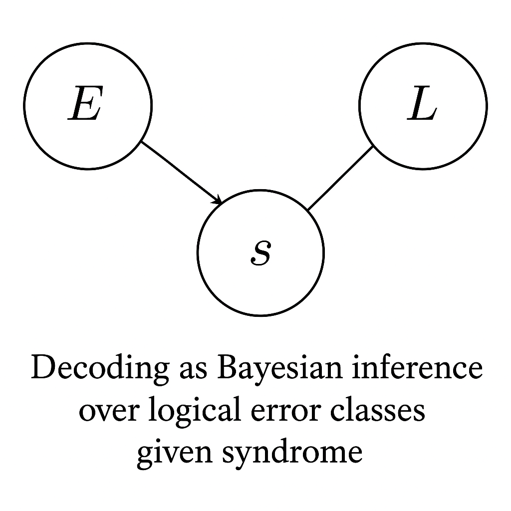
s, E -> L; caption: "Decoding as Bayesian inference over logical error classes given syndrome."">
el-loom 提供解碼的模組化抽象，核心是：
在典型 workflow 中：
DecodingTask（例如循環碼 under i.i.d. depolarizing noise）。Decoder。el-loom 的 sampling 工具產生 many trials，估計邏輯錯誤率、threshold 等。（以下程式片段為概念性範例，實際 API 以官方文件為準）
from loom import codes, noise, tasks
# 1. 建立 code model，例如 LxL planar surface code
code = codes.PlanarSurfaceCode(distance=d)
# 2. 建立 noise model
channel = noise.DepolarizingNoise(p_error=p)
# 3. 建立 DecodingTask
task = tasks.DecodingTask(
code=code,
noise_model=channel,
n_rounds=1, # 單輪 syndrome
phenomenological=False # 或 True 表示直接在 syndrome 上加錯誤
)
DecodingTask 會隱含定義：
在數學上，你可以把它視為定義了一個 joint distribution \[ \Pr(E, \mathbf{s}, L) \quad \text{under given code + noise}, \] 其中 \(L\) 是邏輯錯誤描述（例如 \((\ell_X, \ell_Z)\in \{0,1\}^2\)）。
el-loom 中的典型解碼器物件會提供類似
\[
\texttt{decoder.decode(syndrome)} \mapsto \texttt{recovery or logical guess}
\]
的介面。根據不同任務，可能有：
對研究者而言，關鍵是 Decoder 被抽象成純函式：觀測 \(\to\) 決策。這樣便於比較不同演算法在同一 DecodingTask 下的效果。
from loom import decoders
decoder = decoders.SomeDecoder(task)
syndrome = task.sample_syndrome() # 或來自實驗數據
decision = decoder.decode(syndrome)
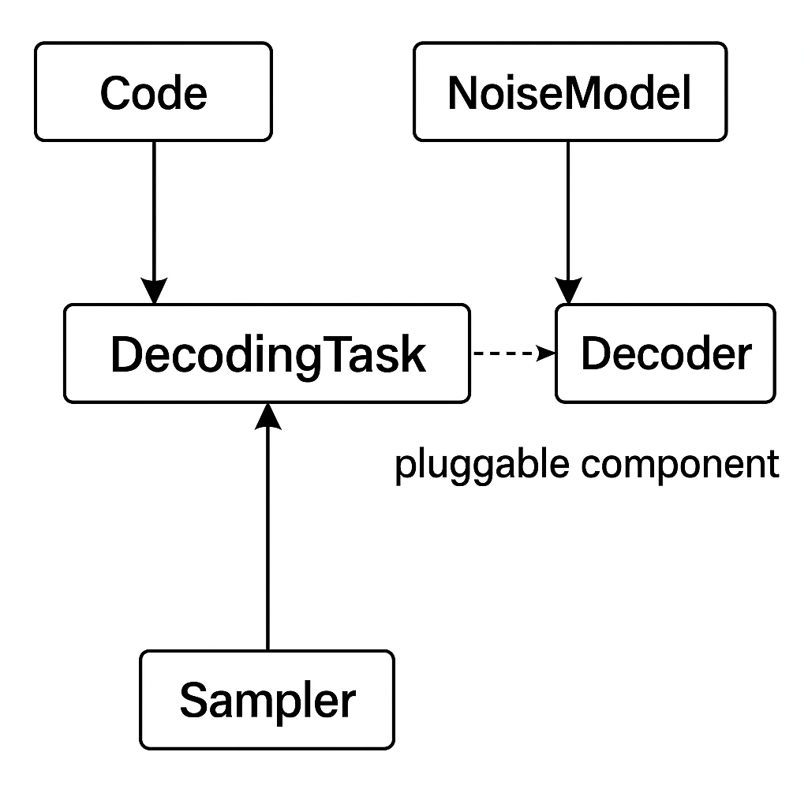
以 2D surface code 在 i.i.d. Pauli 雜訊下為例。假設單量子比特錯誤模型： \[ \Pr(E_j = I) = 1-p,\quad \Pr(E_j = X) = \Pr(E_j = Y) = \Pr(E_j = Z) = \frac{p}{3}, \] 且各 qubit 独立。因此整體錯誤 \(E = \bigotimes_{j=1}^n E_j\) 的機率為 \[ \Pr(E) = \prod_{j=1}^n \Pr(E_j). \] 此處 syndrome \( \mathbf{s} \) 通常等價於「發生一個 Pauli 錯誤時所激發的 defect（違反穩定子）」的集合。對表面碼的 X/Z 穩定子，錯誤導致的 syndrome 變化可以解釋成：錯誤邊（在 dual/ primal lattice 上）連接兩個激發。（不考慮邏輯邊界時）
若我們聚焦在 single-type 錯誤（例如純 Z 錯誤對應 X-type syndrome）的情況，則錯誤可視為 lattice 邊集合 \(E \subseteq \mathcal{E}\)（圖的邊集合）。每條邊 \(e\) 代表在那條邊上的 Z 錯誤 flip 某兩個 X 穩定子。則： \[ \Pr(E) = \prod_{e \in E} p_e \prod_{e \notin E} (1-p_e), \] 其中對 i.i.d. 模型，\(p_e = p\)。
在給定 syndrome（即給定哪些 stabilizer flipped）的情況下，不同的錯誤集 \(E\) 會對應到不同的配對方式（matching）將 syndrome defects 成對連接（或連到邏輯邊界）。MWPM（minimum-weight perfect matching）解碼的思想是：將
\[
-\log \Pr(E) = \sum_{e \in E} -\log p_e + \sum_{e \notin E} -\log(1-p_e)
\]
的差異簡化為只考慮使用到的邊集合對應的「重量」
\[
w_e = \log\frac{1-p_e}{p_e}.
\]
因此最大似然解碼等價於在 syndrome defects 間找一個
總邊權和最小的配對（matching）。
在 i.i.d. 情況下，所有邊權重相同（或仅取決於距離），圖結構簡化為常見的 MWPM 問題，可以使用 Blossom 等多項式時間演算法。
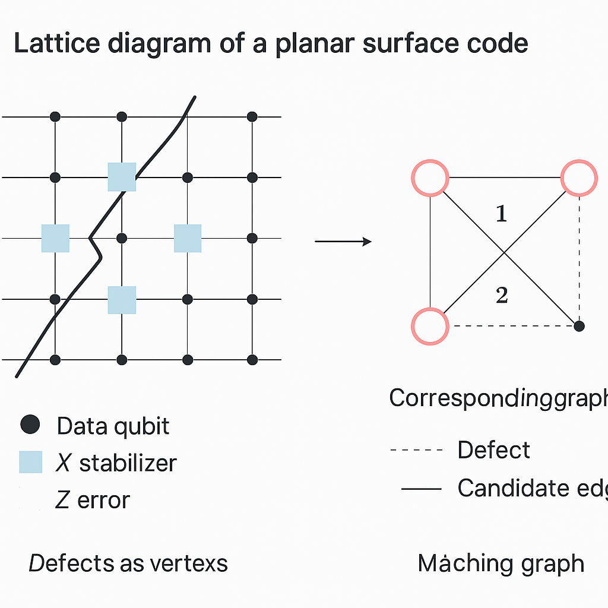
el-loom 提供與 MWPM 類似的解碼器，封裝了從 syndrome 建構 matching graph，並呼叫後端 matching solver 的流程。一般用法（示意）：
from loom import decoders
mwpm_decoder = decoders.MWPMDecoder(task)
syndrome = task.sample_syndrome()
recovery = mwpm_decoder.decode(syndrome)
# 評估邏輯錯誤
logical_error = task.logical_effect(recovery, syndrome)
在內部流程上，可抽象為三步：
在研究中，常需要修改第 2 步的權重模型，來反映更複雜的雜訊（非 i.i.d.、有 bias、空間相關等）。在 el-loom，這通常透過自訂 EdgeWeigher 或相關 callback 來實作。
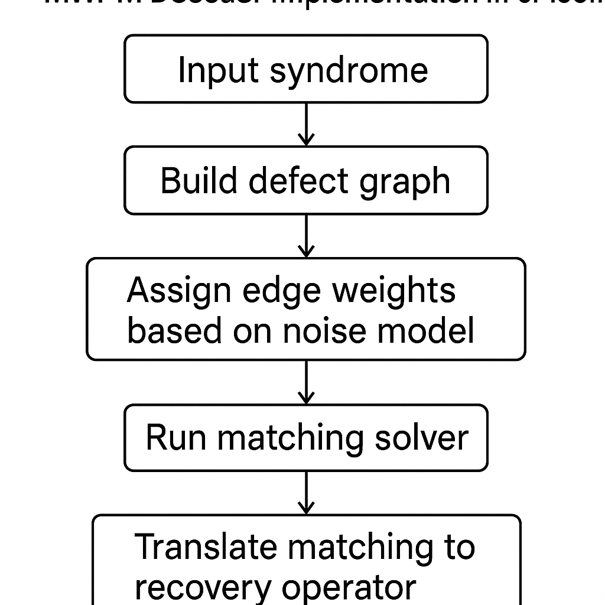
build defect graph -> assign edge weights based on noise model -> run matching solver -> translate matching to recovery operator.">
將邊權重定義為
\[
w_e = -\log \Pr(e \text{ occurs}),
\]
則一個錯誤配置 \(E\) 的權重為
\[
W(E) = \sum_{e \in E} w_e
\]
（忽略常數項）。最大似然解碼即
\[
E^\star = \arg\min_{E \sim \mathbf{s}} W(E).
\]
這形同在一個「能量函數」\(W(E)\) 下的基態問題，與統計物理中 Ising 型系統、自由能最小化有深刻關聯。此視角對理解 threshold、phase transition 有益，也與 el-loom 的 Monte Carlo 模擬與 error sampling 相契合。
完全最佳的邏輯 MAP 解碼需要計算 \[ \Pr([E_\alpha] \mid \mathbf{s}) \propto \sum_{E \in [E_\alpha] \cap \mathcal{E}(\mathbf{s})} \Pr(E). \] 在 i.i.d. Pauli 模型下， \[ \Pr(E) = \prod_{j=1}^n \Pr(E_j), \] 然而 syndrome 相容性條件 \(\mathbf{s}(E) = \mathbf{s}\) 將 Pauli 錯誤間建立「parity constraints」，導致邊緣化變成 NP-hard 的計數問題（#P-hard）。這與 classical LDPC code under belief propagation 的情況相似。
Belief propagation (BP) 或 message passing 演算法試圖在 factor graph 上近似計算這些邊緣機率： \[ \Pr(E_j \mid \mathbf{s}), \] 進而推導對邏輯錯誤的近似 posteriors。對量子 LDPC 及 CSS 碼，常先拆分成 X/Z 錯誤子問題，對應兩個 classical code 的 BP 解碼。
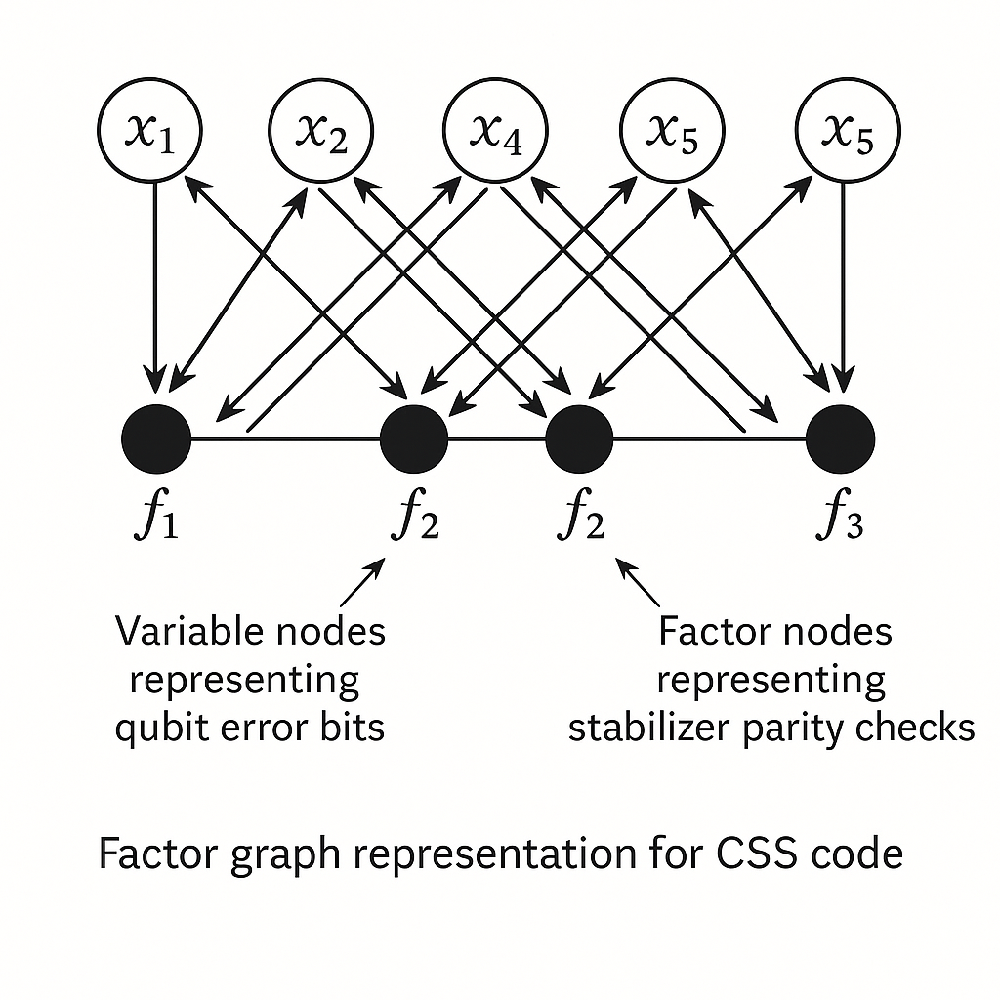
以 classical binary parity check 為例，factor graph 上的消息更新方程是：
最終邊緣分佈估計為 \[ \hat{\Pr}(x_v) \propto \Pr(x_v)\prod_{c \in N(v)} m_{c \to v}(x_v). \] 量子 CSS code 可對 X/Z 子問題各跑一次 BP。對非 CSS code 可使用 generalized BP 或針對 Pauli group 的 generalization。
在 el-loom 中，可以從 code 的 parity check 矩陣或 stabilizer 結構建構 factor graph，然後實作一個 BPDecoder 類別，遵守 Decoder 介面即可：
class BPDecoder(Decoder):
def __init__(self, task, max_iters=50, damping=0.5):
self.task = task
self.max_iters = max_iters
self.damping = damping
self.graph = build_factor_graph(task.code)
def decode(self, syndrome):
beliefs = run_bp(self.graph, syndrome,
max_iters=self.max_iters,
damping=self.damping)
return self._beliefs_to_recovery(beliefs)
其中 build_factor_graph 與 run_bp 部分可以完全獨立開發，reuse 在不同碼與雜訊模型上。
前述 MWPM 與 BP 假設了特定的 factorization 與雜訊模型形式，邊權或 message update 都是明確推導而得。另一方面，若我們有足夠模擬／實驗資料 \((\mathbf{s}^{(i)}, L^{(i)})\)，可以嘗試以 machine learning 直接近似 mapping \[ f_\theta: \mathbf{s} \mapsto \hat{L}, \] 或更理想的是逼近後驗分佈 \[ q_\theta(L \mid \mathbf{s}) \approx \Pr(L \mid \mathbf{s}). \] 這本質上是 supervised classification / probabilistic prediction 問題。
對於穩定子碼，syndrome 維度可很高（特別是 space-time decoding），因此常見選擇 CNN / GNN / transformer 來捕捉 syndrome pattern 的局部與長程結構。量子解碼特有的難點在於：輸入空間巨大、label 噪訊、distribution shift（實驗與模擬不符）、以及需要精確估計 extremely low error rates 區域的 tail behavior。
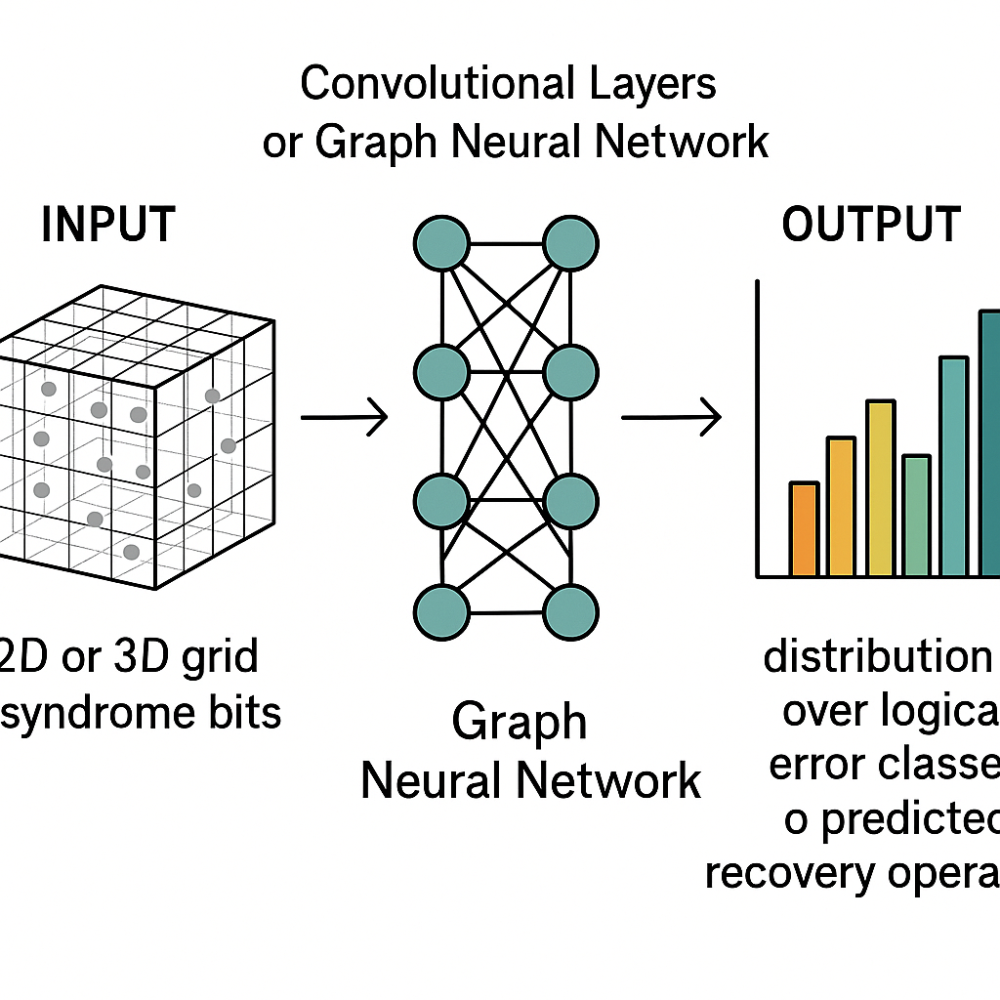
el-loom 並非 ML 框架，但可以方便地作為 資料產生器與評估平台。基本流程：
DecodingTask 產生大量 \((\mathbf{s}, L)\) 樣本。Decoder 子類。el-loom 的 sampling/experiment API 評估該解碼器效能。資料產生示意：
from loom import sampling
sampler = sampling.DecodingSampler(task)
dataset = []
for _ in range(N_samples):
sample = sampler.sample() # returns (error, syndrome, logical_outcome)
s = sample.syndrome
L = sample.logical_outcome # e.g. (lx, lz) bits
dataset.append((s, L))
訓練完後封裝成 Decoder：
class NeuralDecoder(Decoder):
def __init__(self, task, model):
self.task = task
self.model = model # e.g. a PyTorch module
def decode(self, syndrome):
# Convert to tensor, run model
logits = self.model(syndrome_to_tensor(syndrome))
pred_L = logits.argmax(dim=-1)
# 再從邏輯猜測轉為 recovery 或直接回傳邏輯結果
return logical_to_recovery(self.task.code, pred_L)
此設計讓 el-loom 在不與任一 ML framework 綁死的前提下，成為各種 ML 解碼器的共通 benchmark 平台。
實際量子硬體上，穩定子量測本身 noisy，常採用多輪 syndrome 量測。每輪 syndrome \( \mathbf{s}_t \)（\(t = 1,\dots,T\)）可以視為在 time-slice 上的 2D lattice。錯誤可能發生在：
結果是，一個單一錯誤不再只對某輪 syndrome 有影響，而是在 time dimension 上產生鄰接關係。這可以嵌入到一個 3D lattice（2D space + 1D time）中，並使用三維 matching 或其他 3D 解碼器。
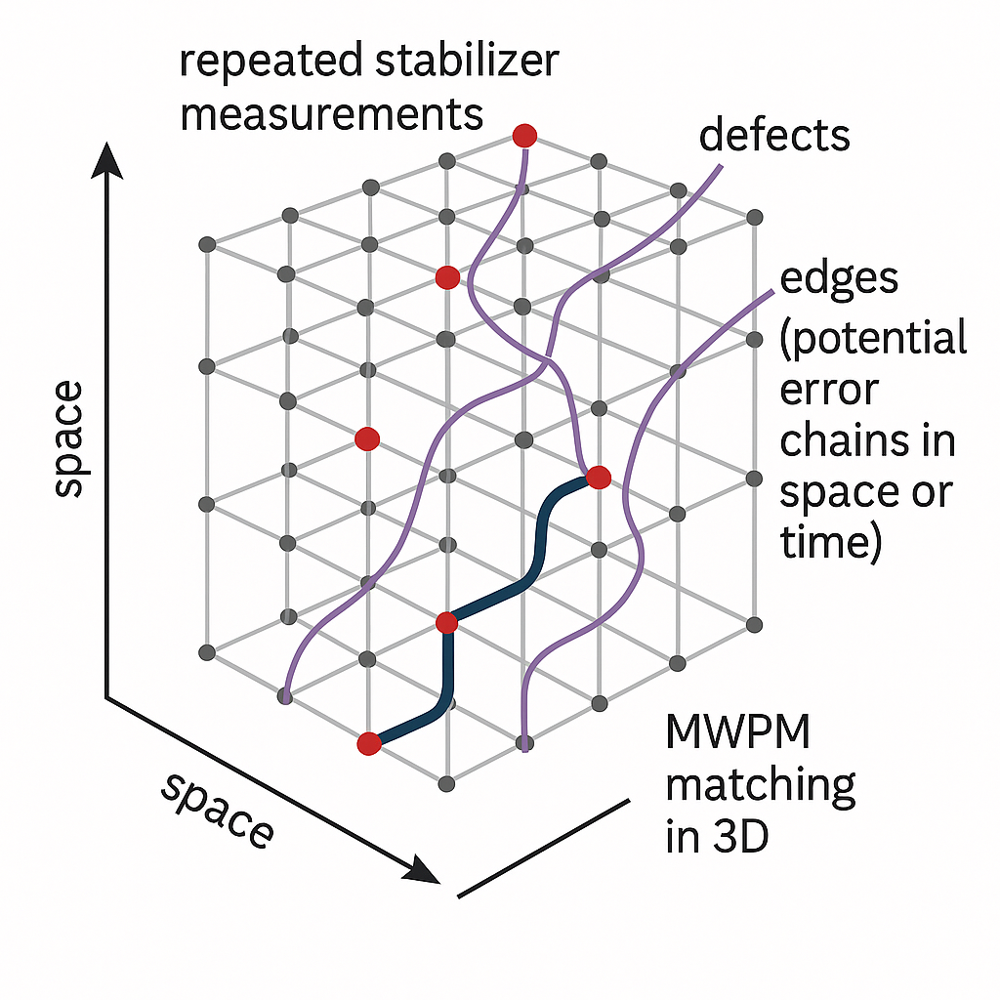
在 el-loom 中，多輪解碼通常由 n_rounds 或類似參數控制：
task = tasks.DecodingTask(
code=code,
noise_model=channel,
n_rounds=T, # 多輪 syndrome
phenomenological=True # 也可表示直接在 syndrome 上加錯誤
)
此時解碼器接受的輸入是 syndrome history： \[ \mathbf{S} = (\mathbf{s}_1, \mathbf{s}_2, \dots, \mathbf{s}_T), \] 並應該產生對應於 3D lattice 的恢復操作（通常投影到最後一輪或整條時間軸）。
MWPM 解碼器會擴展圖結構：
在 el-loom 的 API 中，通常可以指定「decoder 是否 aware of time dimension」，以及 noise model 是否包含 measurement errors，以呼叫對應的 space-time decoder。
假設我們想建造一個簡單的 heuristic 解碼器，結合局部 syndrome pattern 與先驗雜訊 bias。例：假設 Z-error 發生機率遠大於 X-error（biased noise），則邏輯 Z-flip 機率上升，我們想優先修正 Z 相關的 syndrome。
數學上，若雜訊模型為 biased Pauli： \[ \Pr(E_j = Z) = p_Z,\quad \Pr(E_j = X) = p_X,\quad \Pr(E_j = Y) = p_Y, \] 且 \(p_Z \gg p_X, p_Y\)。在近似獨立假設下，給定 syndrome，對單邊錯誤的 posterior odds 比例為： \[ \frac{\Pr(Z_j \mid \mathbf{s})}{\Pr(X_j \mid \mathbf{s})} \approx \frac{p_Z}{p_X} \cdot \frac{\ell_Z(\mathbf{s}; j)}{\ell_X(\mathbf{s}; j)}, \] 其中 \(\ell_Z, \ell_X\) 是「錯誤類型如何解釋當地 syndrome pattern」的 likelihood。若我們設計一個局部 scoring function \(f(\mathbf{s}_\text{local})\) 來估計 \(\ell_Z / \ell_X\)，便可以 heuristically 決定在 qubit \(j\) 上 apply Z-recovery 還是 X-recovery。
在 el-loom 內實作時：
class BiasedHeuristicDecoder(Decoder):
def __init__(self, task, pZ, pX, window_radius=1):
self.task = task
self.pZ = pZ
self.pX = pX
self.window_radius = window_radius
self.neighborhoods = precompute_neighborhoods(task.code, window_radius)
def score_Z_vs_X(self, local_syndrome):
# 這裡可以是 hand-crafted rule 或小型 ML 模型
# 例如根據 syndrome 數量、形狀做一個 logistic score
return some_function(local_syndrome)
def decode(self, syndrome):
recovery = identity_pauli(self.task.code.n_qubits)
for q in range(self.task.code.n_qubits):
local_s = extract_local_syndrome(syndrome, self.neighborhoods[q])
log_odds = (
math.log(self.pZ / self.pX)
+ self.score_Z_vs_X(local_s)
)
if log_odds > 0:
recovery = apply_Z(recovery, q)
else:
# maybe no correction or X-correction, depending on design
pass
return recovery
這樣的解碼器並非嚴格最優，但可以在 el-loom 框架中直接與 MWPM、BP、或神經網路解碼器作性能比較。
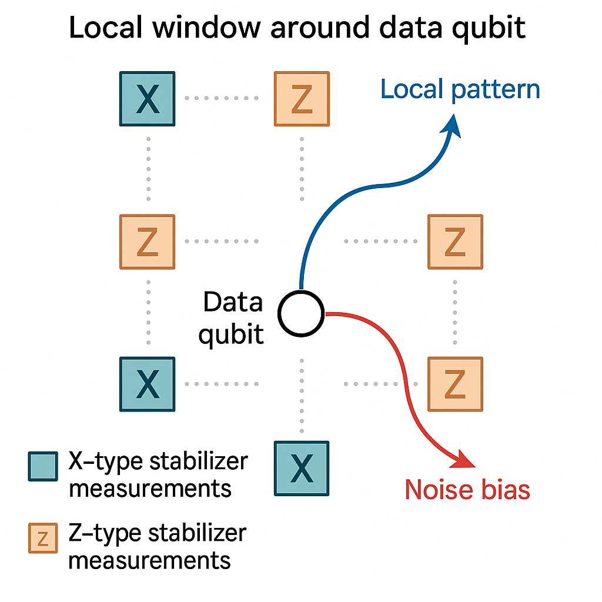
el-loom 的一大優點是可在多種碼（surface, color, quantum LDPC 等）與多種 noise model（i.i.d., biased, correlated, circuit-level）下共用相同 DecodingTask / Decoder 抽象。因此在設計自訂解碼器時，建議保持以下原則：
precompute_neighborhoods），而非 decode 函式中硬寫索引。pZ, pX, correlations），不要直接讀內部 noise object。
此設計使得：
\[
\text{Decoder}: (\text{syndrome space}, \text{hyperparameters}) \to \text{decision space}
\]
可以在任意 DecodingTask 上重複利用，最大化實驗比較的公平性與可重現性。
在給定碼距 \(d\)、物理錯誤率 \(p\)、與解碼器 \(D\) 下，我們通常關心邏輯錯誤率 \[ P_L(d, p; D) = \Pr(\text{logical failure} \mid d, p, D). \] 邏輯失敗事件可定義為：「Recovery + 原始錯誤對應於非平凡邏輯運算」。形式上，令 \[ E: \text{實際錯誤},\quad R = D(\mathbf{s}(E)), \] 若存在邏輯算符 \(\bar{L}\neq I\) 及穩定子 \(S\in \mathcal{S}\) 使得 \[ RE = \bar{L} S, \] 則視為 logical failure。
利用 Monte Carlo 估計：獨立重複實驗 \(N\) 次，失敗次數 \(K\)： \[ \hat{P}_L = \frac{K}{N}. \] 由於每次實驗為 Bernoulli trial，根據二項分佈可得到估計誤差。常見的 95% 置信區間近似為 \[ \hat{P}_L \pm 1.96 \sqrt{\frac{\hat{P}_L(1-\hat{P}_L)}{N}}. \] 在極小錯誤率（如 \(10^{-6}\)）時，需使用更精細的（如 Clopper–Pearson）信賴區間。
el-loom 提供實驗／採樣工具，可自動處理：
示意程式碼：
from loom import experiments
exp = experiments.DecodingExperiment(
task=task,
decoder=decoder,
n_shots=10_000
)
result = exp.run()
print("logical_error_rate =", result.logical_error_rate)
print("confidence_interval =", result.confidence_interval)
在內部，DecodingExperiment 大致上會：
task.sample() 產生 error + syndrome。decoder.decode(syndrome) 產生 recovery。task.logical_effect(error, recovery) 評估是否 logical failure。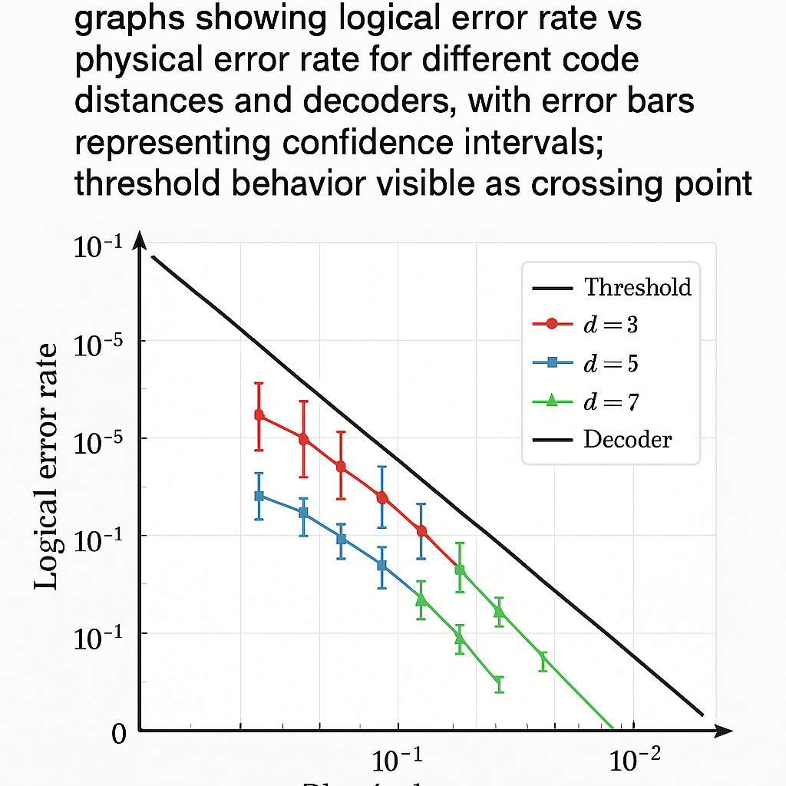
在 threshold 研究中，通常關心某解碼器 \(D\) 的 threshold \(p_{\text{th}}\)，使得：
理論上，在接近 threshold 的區域，有限尺寸 scaling 可表達為 \(F\) 函數，裡面的自變數是括號裡的 \(p 減去 p\) 下標 t h，再乘上 \(d\) 的一除以 \(\nu\) 次方。-->\[ P_L(d, p) \approx F\big((p - p_{\text{th}}) d^{1/\nu}\big), \] 其中 \(F\) 是 scaling function，\(\nu\) 是臨界指數。擬合過程通常：
在 el-loom 中，可透過 Python 的 numpy/scipy 或 Bayesian toolkits（如 pymc）對 DecodingExperiment 的輸出進行後處理，即可完成 threshold 擬合。重點是：el-loom 幫你負責 data generation 與 bookkeeping，讓你專注於統計分析本身。
最後以一個綜合實例總結從 modeling、解碼到統計評估的完整流程：比較三種解碼器（MWPM、BP、Neural）在 surface code under biased noise 下的效能。
from loom import codes, noise, tasks, decoders, experiments
d_list = [5, 7, 9]
p_list = [0.01, 0.03, 0.05, 0.07]
results = []
for d in d_list:
code = codes.PlanarSurfaceCode(distance=d)
# Biased noise, e.g., pZ much larger than pX, pY
channel = noise.BiasedPauliNoise(
pX=0.001, pY=0.001, pZ=0.01
)
task = tasks.DecodingTask(
code=code,
noise_model=channel,
n_rounds=1
)
# Three decoders:
mwpm_dec = decoders.MWPMDecoder(task)
bp_dec = MyBPDecoder(task)
nn_dec = NeuralDecoder(task, pretrained_model)
for p in p_list:
# 這裡假設 noise model 可動態更新物理錯誤率
channel.set_error_rate(p)
for dec_name, dec in [
("mwpm", mwpm_dec),
("bp", bp_dec),
("nn", nn_dec),
]:
exp = experiments.DecodingExperiment(
task=task,
decoder=dec,
n_shots=20_000
)
res = exp.run()
results.append({
"d": d,
"p": p,
"decoder": dec_name,
"logical_error_rate": res.logical_error_rate,
"ci": res.confidence_interval,
})
接著使用 pandas 與 matplotlib 繪圖比對，例如對每個 \(d\) 繪出 \(P_L\) vs \(p\) 的曲線，分別對三種解碼器使用不同顏色。也可做 log-log plot 以觀察 error suppression 行為。
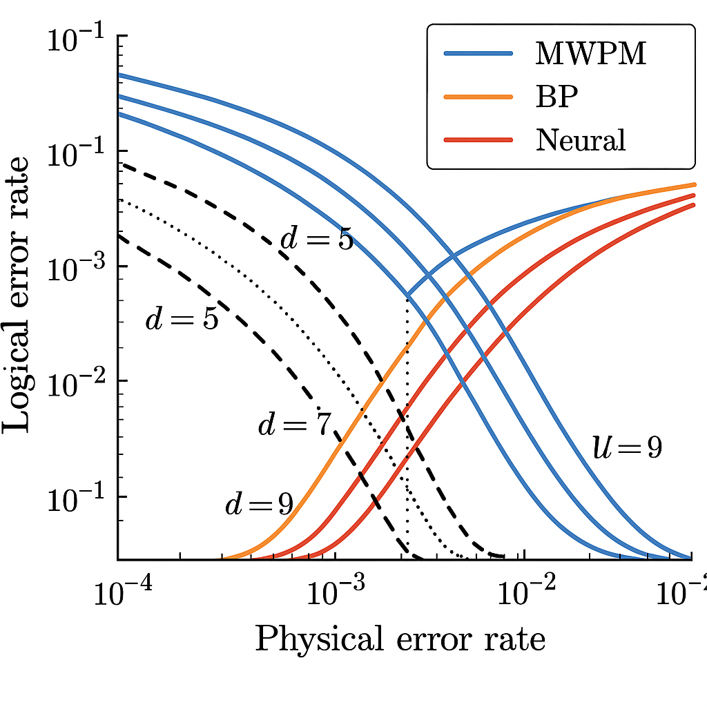
若在 biased noise 下，Neural decoder 的曲線明顯優於 MWPM，代表它在某種意義上更精準估計了後驗機率 \[ \Pr(L \mid \mathbf{s}) \] 或 \(\Pr(E \mid \mathbf{s})\)，反映出：
而 BP 解碼可能在中等 bias 區域表現介於兩者之間，因為它部分考慮了 parity constraints 與 prior bias，但仍受限於 loopiness 與 factorization 假設。
這展示了 解碼器設計 = 對雜訊與 syndrome 結構做出的統計假設 + 計算上的可行性折衷。el-loom 讓我們能在明確的實驗設定下，量化與比較不同統計假設的影響，並以數據支持更進一步的理論分析。
本課程從嚴謹數學定義出發，將量子糾錯中的解碼問題視為一個統計推論任務，討論了：
el-loom 中。el-loom 中實作自訂解碼器並進行公平且具統計顯著性的效能評估。
在 PhD 與研究層級的工作中，el-loom 扮演的是一個 可重現的實驗與推論平台：你可以精準定義 code + noise + decoding task，嵌入自己提出的解碼演算法，透過系統化的 sampling 與統計分析，驗證其在各種 regime（biased, correlated, circuit-level, multi-round）下的行為，並與既有解碼器（MWPM, BP, ML-based）嚴謹比較。
繼續深入時，你可以嘗試：
在這些進階方向中，el-loom 提供的是穩定的「實驗地板」，讓你能將理論推導、演算法設計與實際數據分析緊密結合，推動量子糾錯解碼研究走向更成熟、可實驗驗證的階段。
逐字稿下載：ChatGPT_zh_L04_解碼器與統計推論_在_el_loom_中實作與評估解碼演算法.txt
完整音檔：
Segment 1:
Segment 2:
Segment 3:
Segment 4:
Segment 5:
Segment 6:
Segment 7:
Segment 8:
Segment 9:
Segment 10:
Segment 11:
Segment 12:
Segment 13:
Segment 14:
Segment 15: